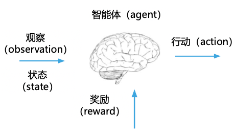
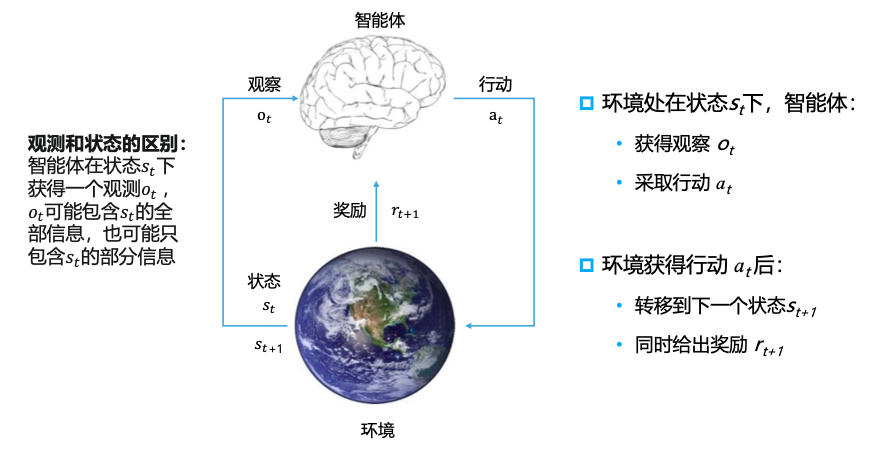
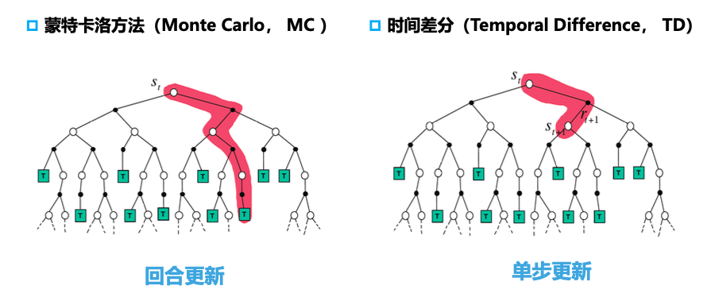

强化学习基本概念
强化学习基本概念
文章逻辑: 1. 对比决策任何和预测任务 2. 描述强化学习定义 3. 介绍强化学习的分类方法
预测任务和决策任务
对比预测任务和决策任务
- 预测任务: 利用过去的数据对未来的数据进行估计, 或者利用已知的数据对未知的数据进行估计, 并不会影响未来;
预测的结果是否使用, 怎么使用, 不需要考虑
- 决策任务: 利用过去的经验, 在每个当前状态下作出行动决策, 并加以实施
- 不光要对各种可能的行动选择做出预判/预测，还要把做出的动作选择在环境中实施
- 一旦某个动作被选择并实施，就会对后续任务的完成和可以获得的奖励产生影响
未来发展随决策行动的改变而改变
解决两种任务的对应方法
- 预测型任务
- 有监督学习
- 无监督学习
- 决策型任务
- 强化学习: 在动态环境中通过试错学习策略
- 模仿学习: 利用监督学习的方式处理决策任务
深度强化学习
利用深度神经网络进行价值函数和策略函数的近似, 从而使强化学习算法能够以端到端的方式解决高纬复杂问题.
强化学习定义
强化学习是一种通过从交互中学习来实现目标的计算方法.
强化学习智能体主要包含三个方面:
- 目标: 随着时间推移最大化累计奖励
- 感知: 某种程度上感知环境的状态
- 行动: 可以采取行动来影响状态或达到目标

强化学习的交互过程

强化学习的系统要素
- 历史轨迹(History Trajectory): 状态、行动和奖励的连续序列. 即, 从初识状态一直到时间\(T\)为止的所有可观测量.
\[ H_T = s_1,a_1,r_1,s_2,a_2,r_2,...,s_{T-1},a_{T-1},r_{T-1},s_T \]
- 策略(Policy): 学习智能体在特定时间的行为方式
- 从状态到行动的映射
- 策略分类
- 确定性策略(Deterministic Policy)
- 随机策略(Stochastic Policy)
- 奖励(Reward): \(r(s,a)或r(s)\)
- 一个定义强化学习目标的标量
- 感知“好坏”的根本
- 价值函数(Value Function):
- 状态价值\(v(s)\)或状态动作价值\(q(s,a)\)是一个标量, 用于定义对长期来说什么是“好”的
- 价值函数是对于未来累计奖励的期望的预估
- 用于评估在给定策略下,
状态或者状态动作对的好坏
- 环境模型(Model): 用于模拟环境的行为
- 环境模型需要提供:
- 状态转移概率: 预测下一个状态
- 奖励函数: 预测下一个奖励
- 环境模型需要提供:
强化学习的分类方法
基于价值还是策略
- 基于价值: 在给定状态下知道什么动作是“好”什么动作是“坏”
- 没有显式的动作函数
- 策略可以基于价值函数按照贪心的选择导出
- 基于策略: 在给定状态下知道该做什么动作
- 只有策略函数
- 没有价值函数
- Actor-Critic: 有“教练”在旁边点评
- 同时有策略函数和价值函数
有模型还是无模型
- 无模型: 智能体并不知道环境模型, 只能在真实的环境中试错学习
- 基于模型:
- 模型环境是已知的(Given the model), 可以在模型上进行计算
- 虽然不知道真实的环境模型, 但是可以在交互过程中通过采样对环境模型进行估计(Learn the model)
价值估计方法

训练数据与当前agent的关系
- 在线策略(On-policy)
- 用于学习的数据来自于当前
agent策略与环境的互动采样
- 用于学习的数据来自于当前
- 离线策略(Off-policy)
- 用于学习的数据来自于其他
agent策略于环境的交互采样
- 用于学习的数据来自于其他
All articles in this blog are licensed under CC BY-NC-SA 4.0 unless stating additionally.